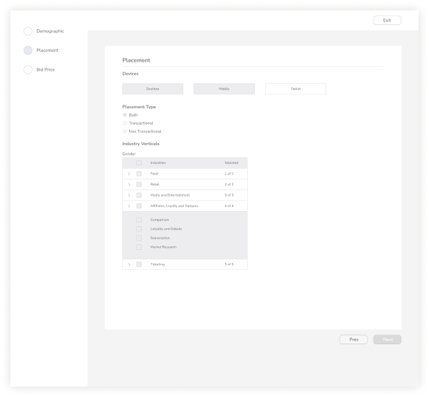

Back
Back
Title
Rokt Platform Design
Overview
Rokt began a redesign of its entire B2B application with the vision of becoming the next biggest ads management platform, alongside Facebook Ads Manager and Google Ads
Goal
The goal of this particular project was to identify any usability issues with the beta release and determine the critical features to prioritise for the next iteration of the product.
Rokt is a Sydney-based internet marketing company that connects businesses to their customers through the customer buying experience.
Process
Understanding the problem
Before Rokt even hired a product design team, a beta release of the
new platform had been implemented based on blue-sky concepts executed
by an external consultancy. These mockups were created without any
usability testing and had little consideration for the technical and
product limitations on the scope of work.
I conducted research interviews with our primary users (account
managers) to uncover any pain points that they were experiencing with
the beta release.
My research encompassed:
-Understanding the user goals and needs
-Uncovering pain points with the existing user journey
-Determining the success of the tasks measured
Gathering insights
After collecting the recordings from the user interviews, I conducted affinity mapping with my teammate to synthesise the pains identified. We grouped these problems under common themes and features in the platform.
I relied on a data-driven approach known as the severity framework to inform my process and list usability issues in order of priority. The framework helps to identify the severity score of a usability issue based on the following three variables:
Task criticality x impact x frequency = severity
Task criticality - how important is the task
to the user? (1 = low, 5 = critical)
Impact
- how much of an impact does this issue have on the user's task? (1 =
suggestion, 5 = blocker)
Frequency (%) - how many times does this
come up out of total participants?
Prioritisation of issues
I took the extra step of categorising these problems into broader Epics to provide the Product managers and engineers with visibility into the key areas of the platform that needed to be addressed from a usability standpoint. This not only helped to prioritise usability issues in order of need but also helped to shape the product roadmap for the quarter.
Product, Design and Engineering teams came to the conclusion that the first Epic we would prioritise would be the Audience Wizard due to its severity score, UX and engineering effort required to rebuild it.
Narrowing down the scope of work
Based on the user interviews conducted with 7 users on the existing Audience wizard, we found the following key issues: -57% of users felt that the process of configuring the wizard was arduous -29% were frustrated that the Next button was disabled so they could not identify which were missing required fields -29% of users found that it was easy to miss field inputs due to a lack of visual hierarchy
Wireframing the Solution
Based on the above problems identified, I worked towards addressing these pains by coming up with potential solutions:
-Reducing the number of steps to minimise time to completion
-Surfacing mandatory fields and enabling the Next button to show error
validation
-Establishing clearer visual form hierarchy by
grouping related fields
-The lack of a formal wizard component
also meant that I had to come up with a standardised styling and UI
pattern for future wizards
I quickly mocked up some basic wireframes to gather feedback from Product, Engineering and the users on the overall layout and structure of the wizard form. This involved establishing a standardised visual hierarchy and layout for the future wizard component.
Validating the designs
I conducted usability testing sessions with our primary users to validate whether the new designs would solve their problems. I wrote a script including a scenario asking the user to create a new Audience targeting females of all ages on mobile devices with manual bidding enabled.
During the session, I observed how they interacted with the prototype and set up the Audience. The usability session revealed that it was less arduous to set up a new Audience due to the grouping of related fields. It was easier for the user to identify which forms they had to fill, as advanced settings were now hidden under a collapsable toggle.

This is the end of the page, I sincerely appreciate you for taking out time to look through my work

Role
UX Research and Visual Design